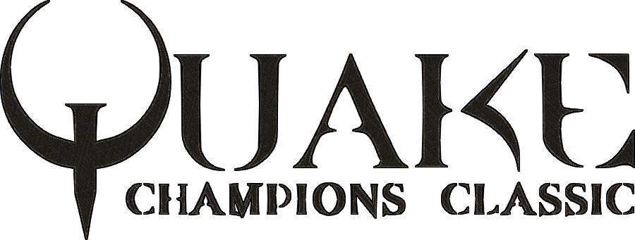

PURE SPEED. PURE SKILL. PURE FPS.
Quake Champions Classic seeks to mix the champion gameplay and balance from Quake Champions with the retro aesthetics and community expandability of both the multiplayer and singleplayer of the original Quake.
To that end, the weapons have all been rebalanced to the current live build of Quake Champions, including both damage and ammo count. Champions themselves will be translated as closely as possible.
If you're interested in contributing to the mod (not just ideas or requests, please), feel free to reach out to me, RhapsodyInGeek, on either the Quake Mapping Discord or the BlueKeyGames Discord.
This has largely been a study and exercise for me in game design while I take small breaks from my actual semi-professional game project, They Camer From Dimension X. As such, updates on this can take awhile. I do intend to "finish it" however, and plan on adding to it as time goes by.
Anyway, I hope you enjoy this little hobby project of mine! Let me know in the Slipseer Discussion or on Discord if you'd like to contribute or even just what you think of it! ♥
Modder Credits
-
Tim Maccabe / RhapsodyInGeek
- lead developer
- mapping: Corrupted Keep
- https://www.artstation.com/jaredlau
- xpax.sh Linux shell script
Jared Lau / fossil
plague_spreader